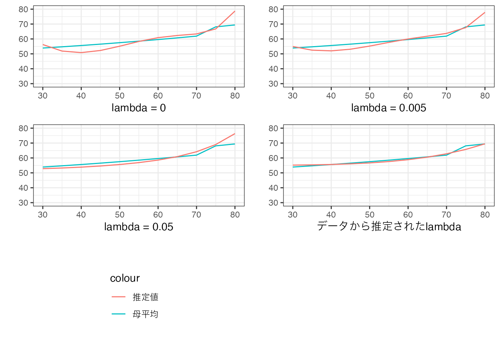
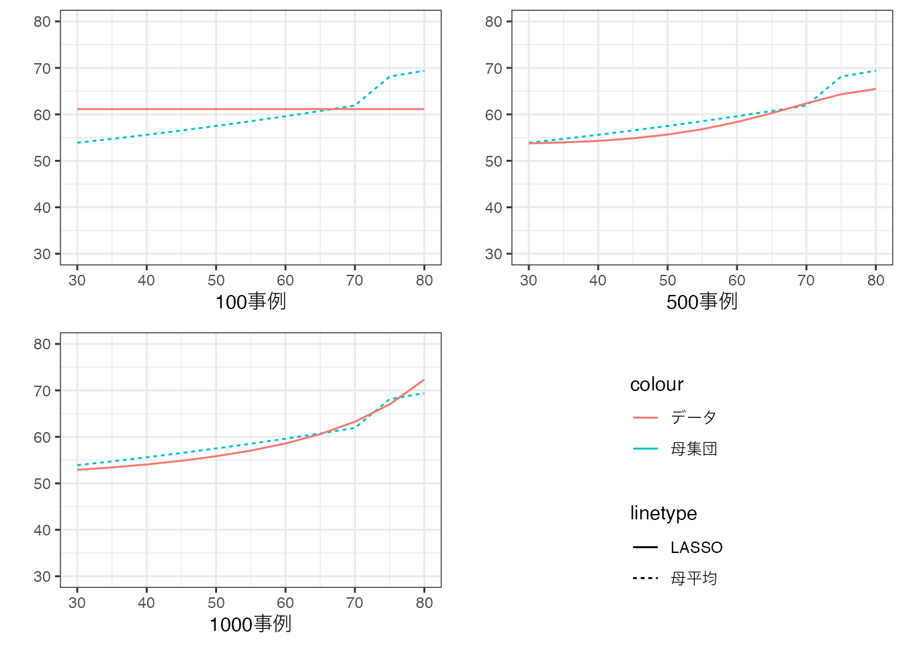

5 LASSO
複雑なモデルを適切に推定する方法として、LASSO (Tibshirani 1996) を紹介します。 LASSOは、罰則付き回帰と呼ばれる枠組みの一つの手法です。 OLSと同様に線型予測モデルを推定しますが、データへの当てはまりだけでなく、モデルの複雑性も抑制することも目指します。
5.1 推定方法
例えば、以下のモデルの推定を目指します。\[\beta_1 Size\times 板橋区ダミー+.. + \beta_6 Size^6\times 板橋区ダミー\] \[+..+\beta_{132} Size\times 中央区ダミー+.. +\beta_{138} Size\times 中央区ダミー\]
合計138個のパラメタがあり、事例数次第では、OLS推定は深刻な過剰適合に直面します。 これはOLS推定が、以下を最小化するように\(\beta\)を推定しているためです。 \[(Y - 予測値)^2 のデータ上の平均\] \(\beta\)の数が多いと、データへの不適合度 \((Y - 予測値)^2\) をいくらでも低下させられるため、複雑なモデルを推定するとデータへの過剰適合 (母平均からの乖離)を引き起こします。
LASSO推定では、\(\beta\) の値を以下を最小化するように決定します。
定義 LASSO
\[(Y - 予測値)^2 のデータ上の平均\] \[+ \underbrace{\lambda}_{Tunning\ Parameter} (\beta_1の絶対値 +..)\] \(\lambda\)は、データへの当てはまりではなく、モデルの予測性能を高めるように決定する。 具体的には、交差検証を用いる方法(Tibshirani 1996)、情報基準などの理論的な評価指標を用いる方法などがある (Belloni, Chernozhukov, and Hansen 2014; Taddy 2017) 。
\(\lambda\) に応じて、予測モデルがどのように変化するのか考えてみます。 \(\lambda\) を変化させることで、予測モデルは、単純平均と複雑なモデルのOLSの間で変化することになります。 \(\lambda=0\) であれば、OLSと全く同じモデルを推定します。 よって複雑な線型モデルを推定した場合は、データ上の平均値に近いモデルとなります。 \(\lambda\) を非常に大きい値を設定した場合、\(\beta_1=\beta_2=..= 0\) となります。 この場合は\(\beta_0\)をデータに当てはまるように推定することになり、単純平均と一致します。
以下の数値例は、200事例からなるデータについて、LASSOにより以下のモデルを推定しました \[\beta_0 + \beta_1Size+..+\beta_6Size^6\]
\(\lambda\)については、0,0.005,0.05、および赤池情報基準により選ばれた値 (Taddy 2017) を使用した結果を図示しています。
\(\lambda=0\) に比べると、\(\lambda\) の値が大きくなるにつれ、モデルが単純な曲線に近づいていることが確認できます。 また Taddy (2017) に基づいて設定された\(\lambda\) のもとでは、かなり単純化されたモデルが推定されたことも確認できます。
練習問題
\(\lambda\) は、\(\beta\) と異なり、データへの当てはまりを最大化するように決定できません。 なぜでしょうか？
5.1.1 事例数の拡大
推定結果は、一般に事例数に強く影響を受けます。 特にLASSOなどの機械学習の方法においては、データの特徴により強く依存します。
以下の数値例では、事例数を100事例から1000事例まで増やし、 \(Y\sim Size + .. + Size^10\) をLASSOで推定しています (\(\lambda\) は Taddy (2017) の方法で設定しています)。

事例数の増加とともに、モデルの複雑性が、「自動調整」されていることが確認できます。 100事例では、単純平均値が推定されており、極めて単純なモデルが採用されています。 事例が増えると、モデルの傾きのみならず、「曲がり方」も変化し、モデルが複雑化しています。
5.2 信頼区間
LASSOによる推定されたパラメタについて、信頼区間を計算する方法は盛んに議論されているものの、筆者の知る限り、現状確立された方法は存在しません1。
5.3 Rによる実践例
以下のパッケージを使用
readr (tidyverseに同梱): データの読み込み
gamlr: LASSO
5.3.1 準備
データとその事例数を取得し、データをランダムに分割します。
Data = readr::read_csv("Public.csv") # データ読み込み
X = model.matrix(
~ 0 +
(Size + Tenure + StationDistance + District)**2 + # 交差項
I(Size^2) + I(Tenure^2) + I(StationDistance^2), # 二乗項
Data
) # X の作成
X = scale(X) # 標準化
colnames(X) # Xに格納されている変数の確認 [1] "Size" "Tenure"
[3] "StationDistance" "District世田谷区"
[5] "District中央区" "District中野区"
[7] "District北区" "District千代田区"
[9] "District台東区" "District品川区"
[11] "District大田区" "District文京区"
[13] "District新宿区" "District杉並区"
[15] "District板橋区" "District江戸川区"
[17] "District江東区" "District渋谷区"
[19] "District港区" "District目黒区"
[21] "District練馬区" "District荒川区"
[23] "District葛飾区" "District豊島区"
[25] "District足立区" "District墨田区"
[27] "I(Size^2)" "I(Tenure^2)"
[29] "I(StationDistance^2)" "Size:Tenure"
[31] "Size:StationDistance" "Size:District中央区"
[33] "Size:District中野区" "Size:District北区"
[35] "Size:District千代田区" "Size:District台東区"
[37] "Size:District品川区" "Size:District大田区"
[39] "Size:District文京区" "Size:District新宿区"
[41] "Size:District杉並区" "Size:District板橋区"
[43] "Size:District江戸川区" "Size:District江東区"
[45] "Size:District渋谷区" "Size:District港区"
[47] "Size:District目黒区" "Size:District練馬区"
[49] "Size:District荒川区" "Size:District葛飾区"
[51] "Size:District豊島区" "Size:District足立区"
[53] "Size:District墨田区" "Tenure:StationDistance"
[55] "Tenure:District中央区" "Tenure:District中野区"
[57] "Tenure:District北区" "Tenure:District千代田区"
[59] "Tenure:District台東区" "Tenure:District品川区"
[61] "Tenure:District大田区" "Tenure:District文京区"
[63] "Tenure:District新宿区" "Tenure:District杉並区"
[65] "Tenure:District板橋区" "Tenure:District江戸川区"
[67] "Tenure:District江東区" "Tenure:District渋谷区"
[69] "Tenure:District港区" "Tenure:District目黒区"
[71] "Tenure:District練馬区" "Tenure:District荒川区"
[73] "Tenure:District葛飾区" "Tenure:District豊島区"
[75] "Tenure:District足立区" "Tenure:District墨田区"
[77] "StationDistance:District中央区" "StationDistance:District中野区"
[79] "StationDistance:District北区" "StationDistance:District千代田区"
[81] "StationDistance:District台東区" "StationDistance:District品川区"
[83] "StationDistance:District大田区" "StationDistance:District文京区"
[85] "StationDistance:District新宿区" "StationDistance:District杉並区"
[87] "StationDistance:District板橋区" "StationDistance:District江戸川区"
[89] "StationDistance:District江東区" "StationDistance:District渋谷区"
[91] "StationDistance:District港区" "StationDistance:District目黒区"
[93] "StationDistance:District練馬区" "StationDistance:District荒川区"
[95] "StationDistance:District葛飾区" "StationDistance:District豊島区"
[97] "StationDistance:District足立区" "StationDistance:District墨田区" 合計101個のパラメタ推定を目指します。
hdmパッケージ内のrlasso関数を用いてLASSO推定をします。 またLASSO推定は、複雑なモデルを推定に利点を持つため、交差項と二乗項までを導入したモデルも推定しています。
LASSO = gamlr::gamlr(
y = Data$Price,
x = X
) # LASSO推定LASSOで推定されたモデルで使用される変数リストは、以下で表示できます。 Trueが選択された変数です。
推定された値は、以下で示します。
coef(LASSO) # 推定値99 x 1 sparse Matrix of class "dgCMatrix"
seg100
intercept 42.705221072
Size 22.085283332
Tenure -0.949260232
StationDistance .
District世田谷区 0.885399681
District中央区 .
District中野区 .
District北区 .
District千代田区 .
District台東区 .
District品川区 .
District大田区 .
District文京区 .
District新宿区 .
District杉並区 .
District板橋区 .
District江戸川区 .
District江東区 .
District渋谷区 .
District港区 .
District目黒区 0.145531303
District練馬区 .
District荒川区 .
District葛飾区 .
District豊島区 .
District足立区 .
District墨田区 .
I(Size^2) 5.098523148
I(Tenure^2) 0.764221115
I(StationDistance^2) .
Size:Tenure -9.504525202
Size:StationDistance -3.840468008
Size:District中央区 2.207591886
Size:District中野区 .
Size:District北区 -0.947403269
Size:District千代田区 4.536157097
Size:District台東区 .
Size:District品川区 1.556391250
Size:District大田区 -0.999011985
Size:District文京区 1.658065622
Size:District新宿区 2.554318454
Size:District杉並区 0.092031271
Size:District板橋区 -2.322997154
Size:District江戸川区 -2.265860521
Size:District江東区 -0.573435169
Size:District渋谷区 5.671810968
Size:District港区 12.715565955
Size:District目黒区 2.106822926
Size:District練馬区 -1.492913960
Size:District荒川区 -1.064818067
Size:District葛飾区 -2.532339361
Size:District豊島区 0.818647790
Size:District足立区 -3.474390892
Size:District墨田区 -0.677389749
Tenure:StationDistance 0.285838918
Tenure:District中央区 .
Tenure:District中野区 .
Tenure:District北区 .
Tenure:District千代田区 -1.110147900
Tenure:District台東区 0.400329988
Tenure:District品川区 -0.002439637
Tenure:District大田区 .
Tenure:District文京区 .
Tenure:District新宿区 -0.219994692
Tenure:District杉並区 .
Tenure:District板橋区 .
Tenure:District江戸川区 .
Tenure:District江東区 .
Tenure:District渋谷区 -1.158716799
Tenure:District港区 -2.258199491
Tenure:District目黒区 .
Tenure:District練馬区 .
Tenure:District荒川区 .
Tenure:District葛飾区 .
Tenure:District豊島区 .
Tenure:District足立区 .
Tenure:District墨田区 .
StationDistance:District中央区 .
StationDistance:District中野区 0.006454483
StationDistance:District北区 .
StationDistance:District千代田区 -0.259898503
StationDistance:District台東区 .
StationDistance:District品川区 .
StationDistance:District大田区 .
StationDistance:District文京区 .
StationDistance:District新宿区 0.099488399
StationDistance:District杉並区 .
StationDistance:District板橋区 .
StationDistance:District江戸川区 .
StationDistance:District江東区 .
StationDistance:District渋谷区 .
StationDistance:District港区 -2.157523041
StationDistance:District目黒区 0.217234860
StationDistance:District練馬区 .
StationDistance:District荒川区 .
StationDistance:District葛飾区 .
StationDistance:District豊島区 .
StationDistance:District足立区 .
StationDistance:District墨田区 . “.”は、厳密に0であることを意味しています。